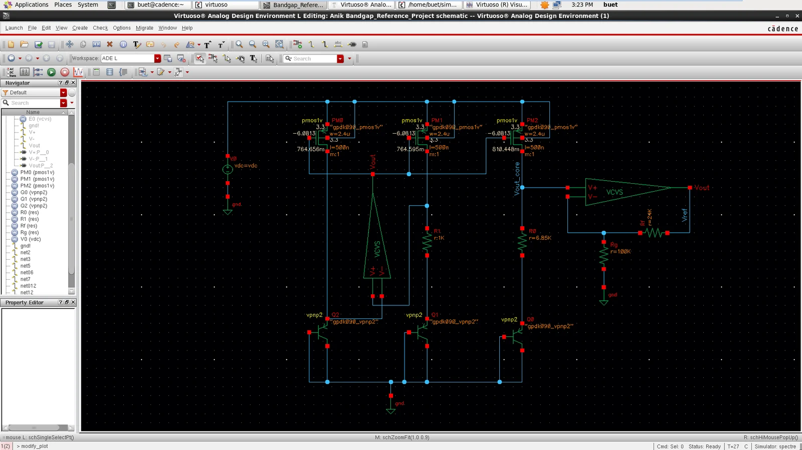
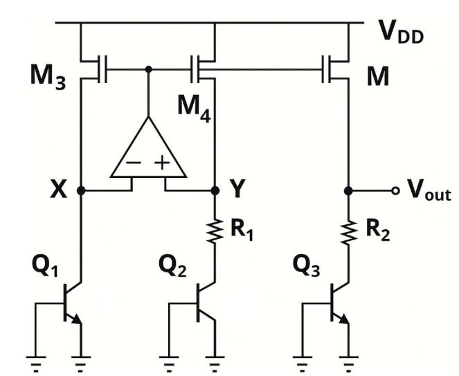
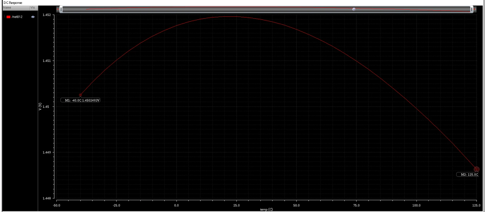

Analog IC Design
1.45 V Bandgap Reference Circuit
Cadence Virtuoso · GPDK 90 nm · Spectre DC temperature sweep
A course project with a stated target: VREF between 1.4 and 1.5 V and a 10–17 ppm/°C temperature coefficient over −40 to 125 °C. The core (PMOS mirror, PNP BJTs in a 1 : 10 : 1 ratio, R1 = 1 kΩ, R2 = 6.85 kΩ) is flat at about 1.17 V; a non-inverting stage (Rf = 24 kΩ, Rg = 100 kΩ) scales it to about 1.45 V.

Approach
VREF = |VBE3| + (R2/R1)·VT·ln(n). Raising R2 to push the output into the target band made the temperature slope too positive, so the core was first optimized for minimum drift (R2 = 6.85 kΩ) and the level was set separately by a gain stage of 1 + 24k/100k = 1.24.

Result
TC = (1.4520 − 1.4486) / (1.45 × 165) × 10⁶ ≈ 14.2 ppm/°C. The parabolic curve is the expected first-order bandgap shape: PTAT and CTAT slopes cancel near the middle of the range.

Scope and limitations
- Both op-amps are ideal VCVS blocks (gain 100 k); no transistor-level amplifier, startup circuit or supply-pin op-amp.
- The 1.45 V output comes from scaling a ≈1.17 V core with an ideal gain stage; in a real design the gain-stage error would add drift.
- Run at VDD = 3.3 V. No supply sweep, so PSRR, line regulation, quiescent power and startup behavior were not measured.
- Nominal-model simulation: no process-corner or Monte Carlo analysis. The baseline concept comes from the course laboratory experiment.